NAIS 면접 발표용 캡처면접 발표용 화면 캡처
고해상도 PNG 13장 · 전체 화면과 핵심 영역 확대본 · 2026-10-28
01~07: 테스트 데이터로 확인한 새 UI / 08: 저장된 실제 실행 기록 재생 화면
용도·발표 문장·근거 설명 · 전체 ZIP 다운로드
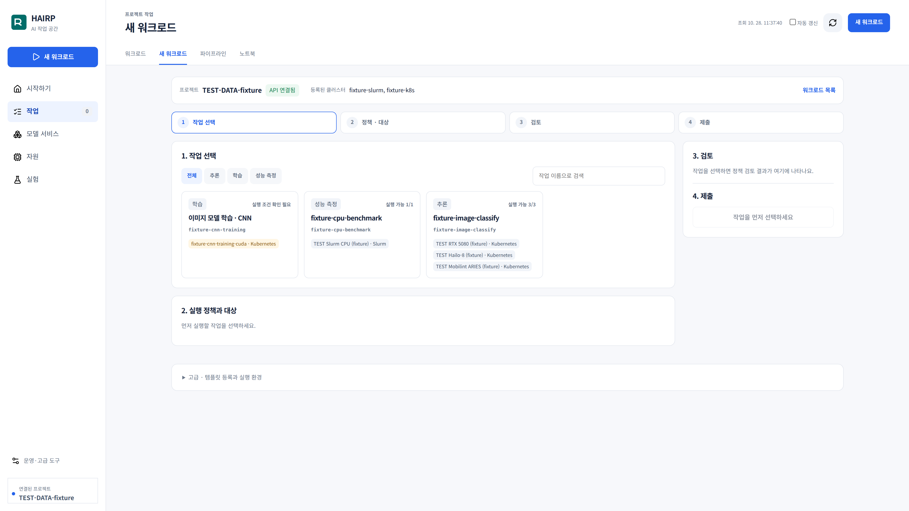
TEST DATA · UI 제출 검증 · 장비 실행 없음등록된 작업과 장치
3840 × 2160 PNG
원본 다운로드 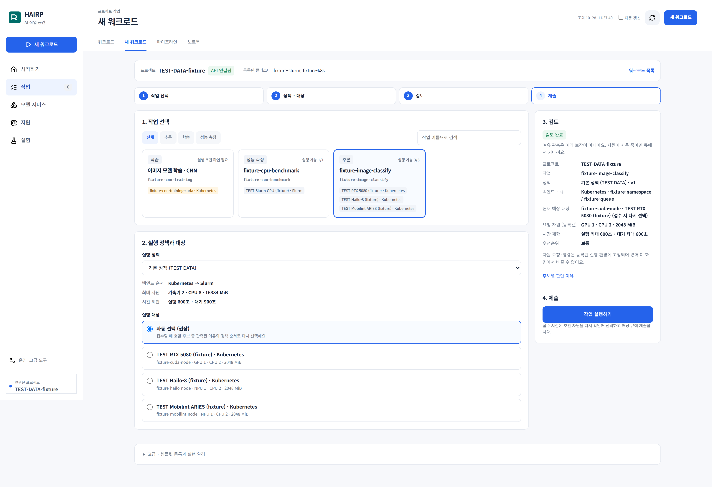
TEST DATA · UI 제출 검증 · 장비 실행 없음자동 선택과 제출 검토
3840 × 2632 PNG
원본 다운로드 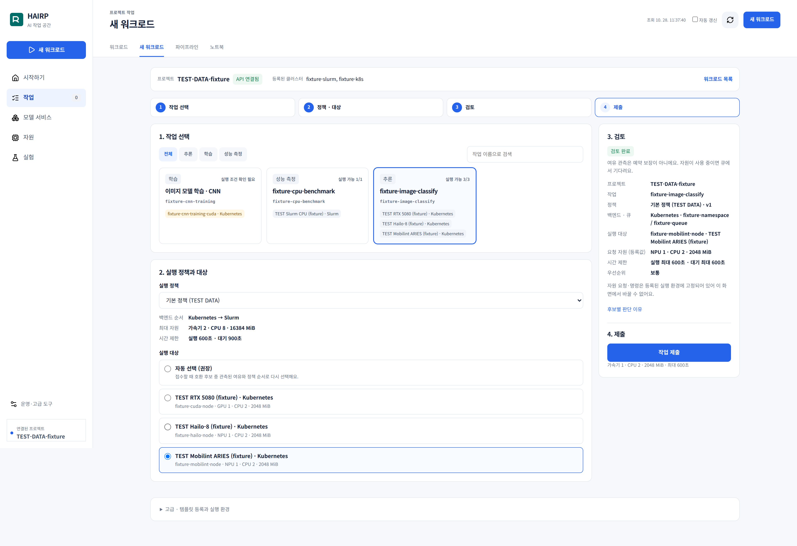
TEST DATA · UI 제출 검증 · 장비 실행 없음Mobilint 선택 전체 화면
3840 × 2632 PNG
원본 다운로드 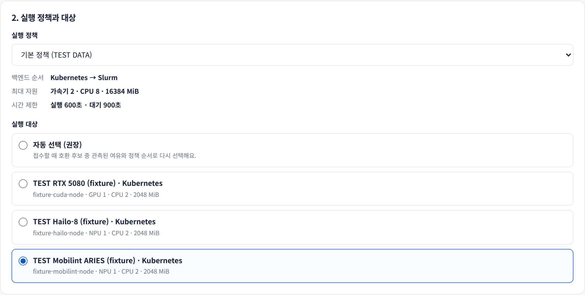
TEST DATA · UI 제출 검증 · 장비 실행 없음장치 선택 확대
2128 × 1076 PNG
원본 다운로드 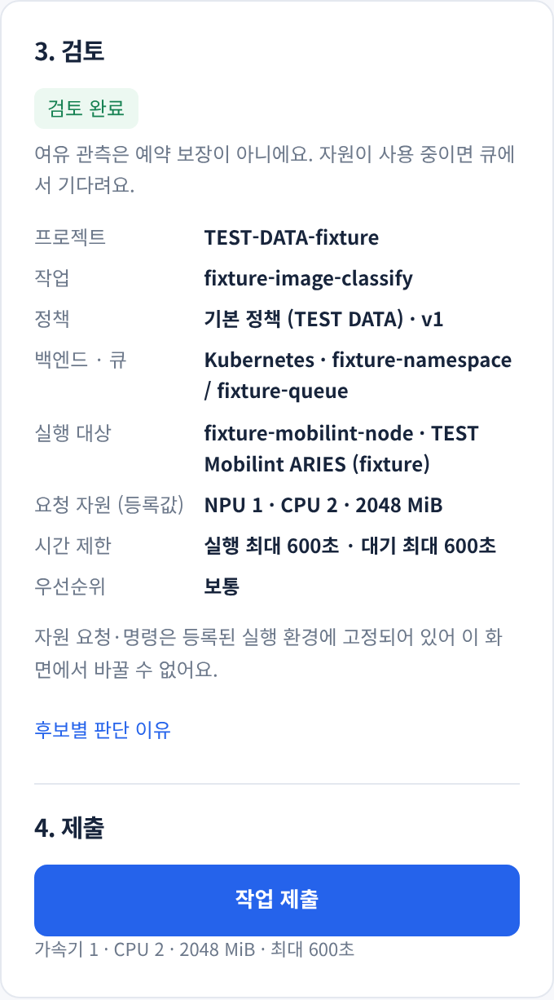
TEST DATA · UI 제출 검증 · 장비 실행 없음Mobilint · Kubernetes 큐 검토
680 × 1226 PNG
원본 다운로드 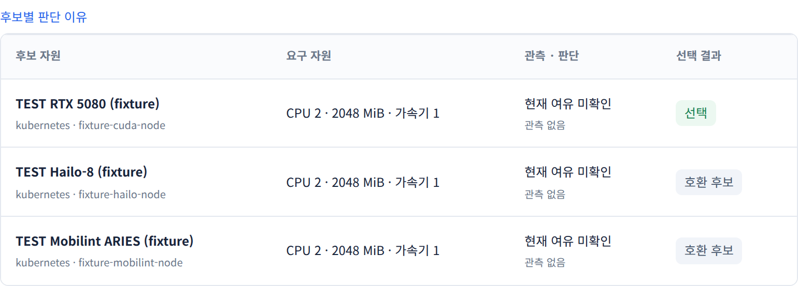
TEST DATA · UI 제출 검증 · 장비 실행 없음후보별 요구 자원과 선택 결과
1540 × 554 PNG
원본 다운로드 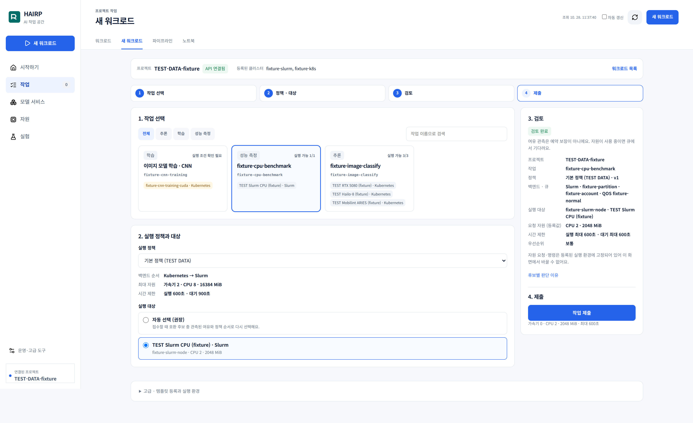
TEST DATA · UI 제출 검증 · 장비 실행 없음Slurm 제출 검토 전체 화면
3840 × 2350 PNG
원본 다운로드 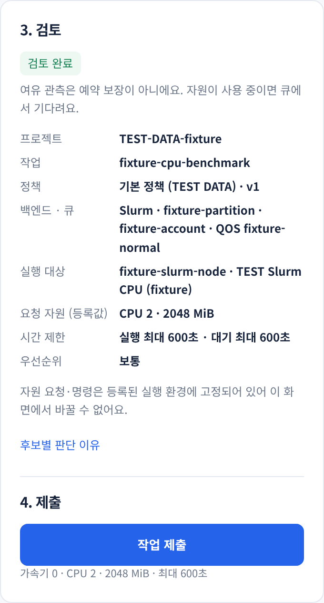
TEST DATA · UI 제출 검증 · 장비 실행 없음Slurm partition · QoS 검토
680 × 1264 PNG
원본 다운로드 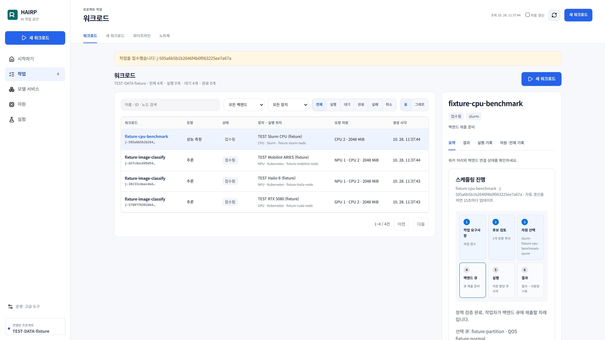
TEST DATA · UI 제출 검증 · 장비 실행 없음이기종 요청 통합 목록
3840 × 2160 PNG
원본 다운로드 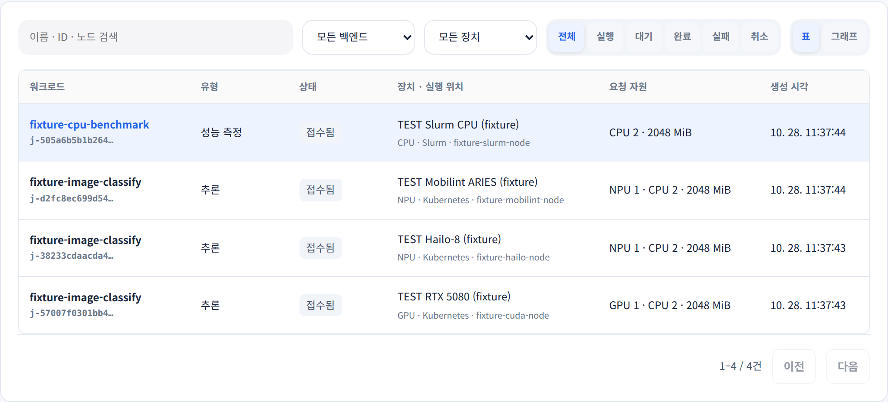
TEST DATA · UI 제출 검증 · 장비 실행 없음작업 목록 확대
2040 × 926 PNG
원본 다운로드 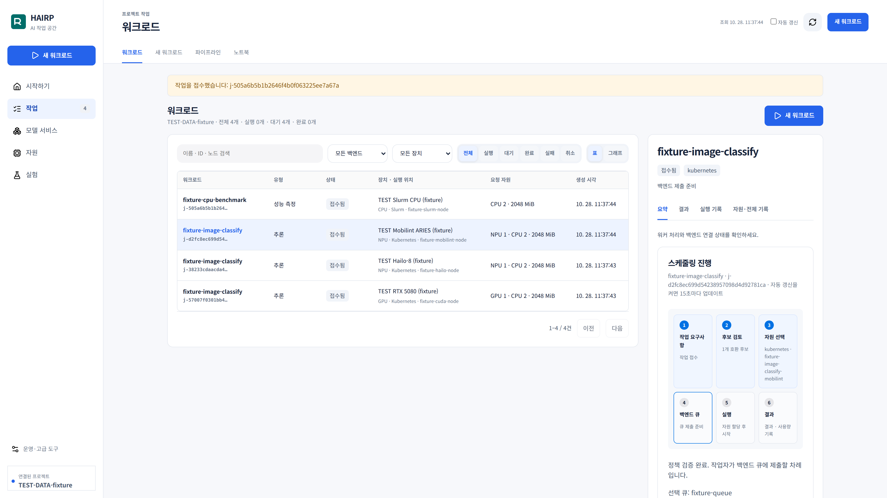
TEST DATA · UI 제출 검증 · 장비 실행 없음Mobilint 접수 상세
3840 × 2160 PNG
원본 다운로드 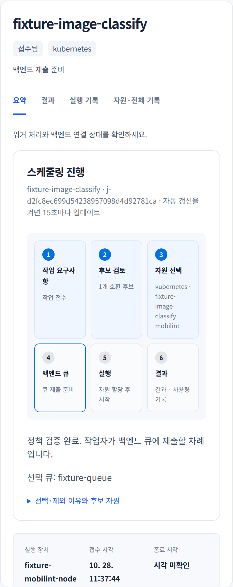
TEST DATA · UI 제출 검증 · 장비 실행 없음요구사항부터 결과까지 단계 표시
760 × 1914 PNG
원본 다운로드 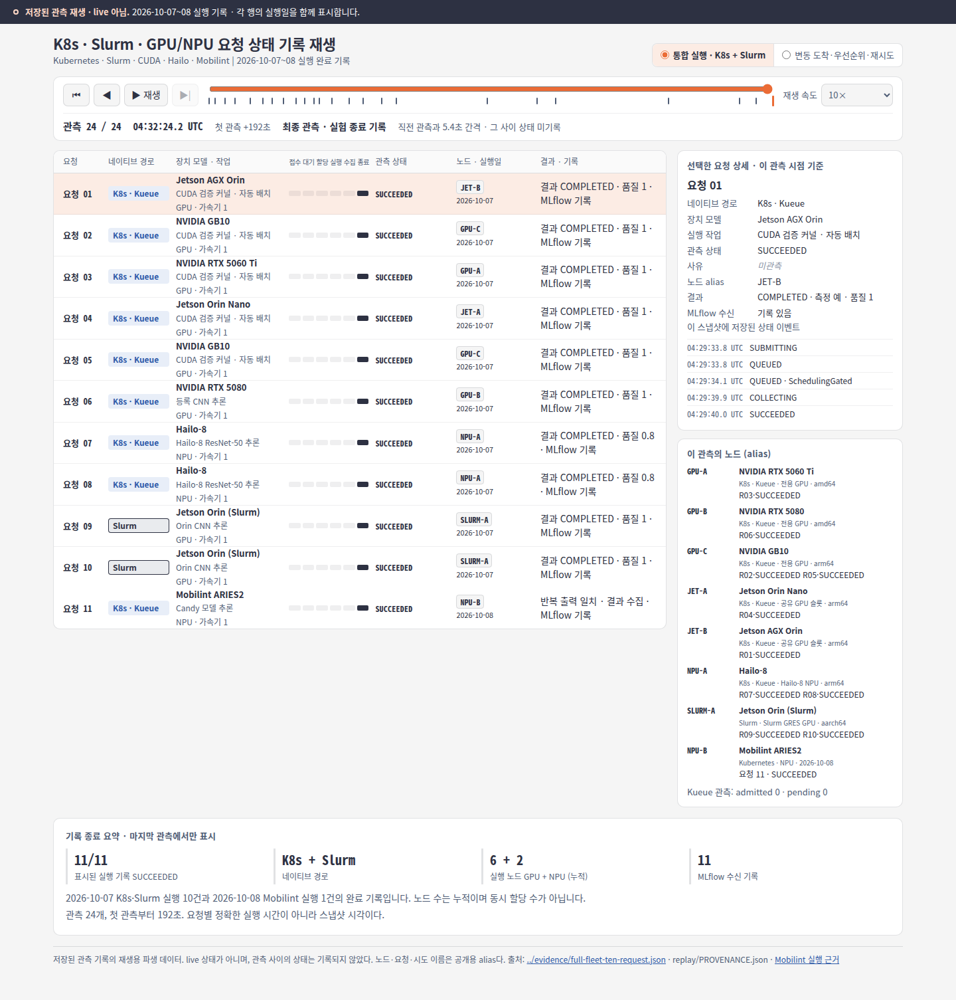
저장된 실제 실행 기록 재생 · live 아님기존 실제 실행 기록 재생 · 10월 7~8일
1440 × 1505 PNG
원본 다운로드